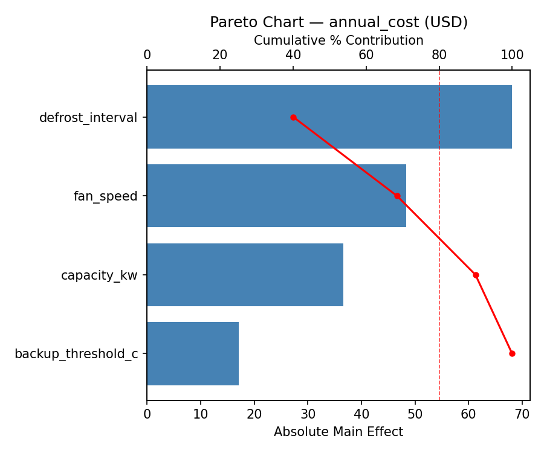
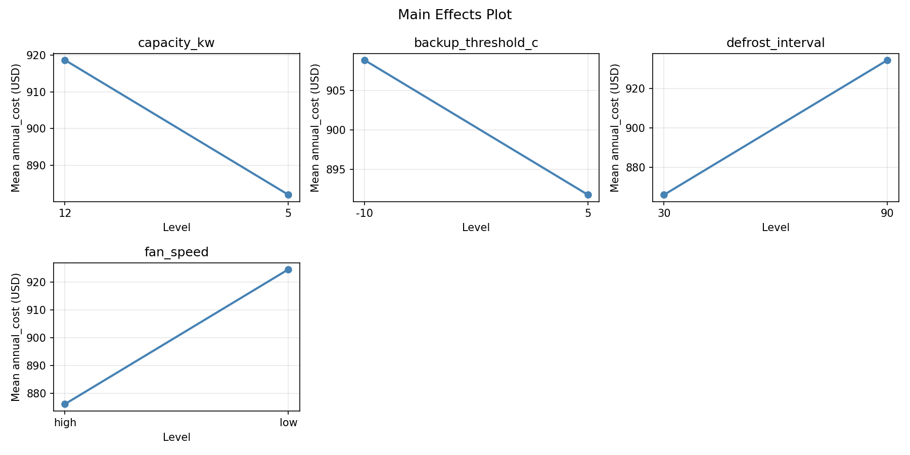
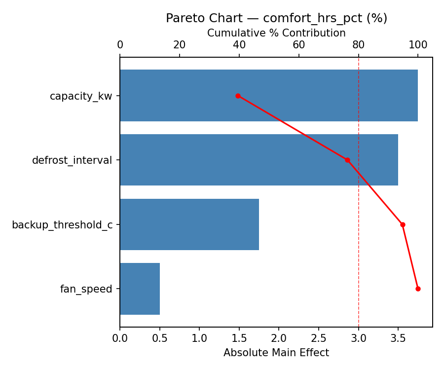
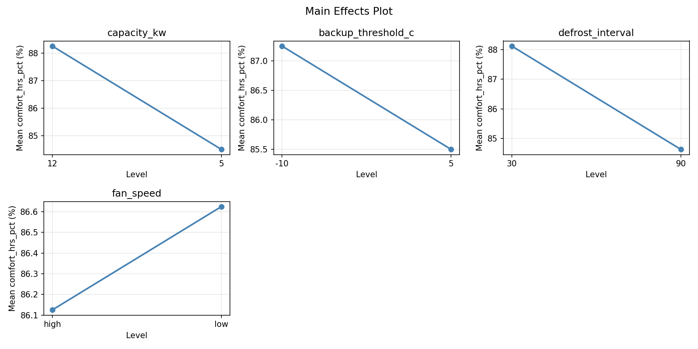
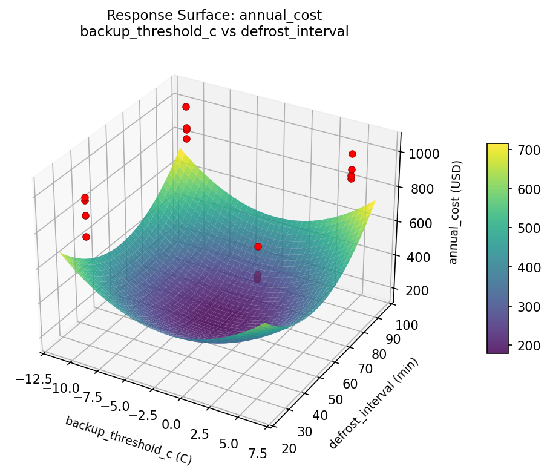
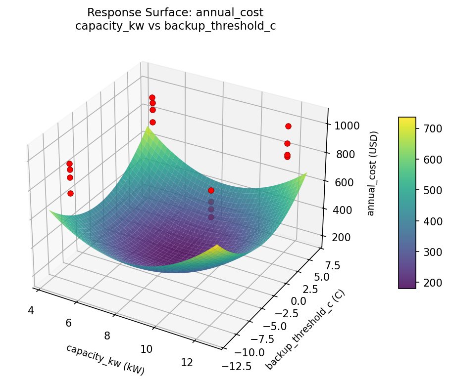
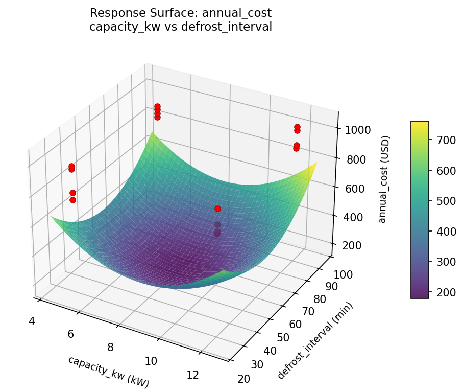
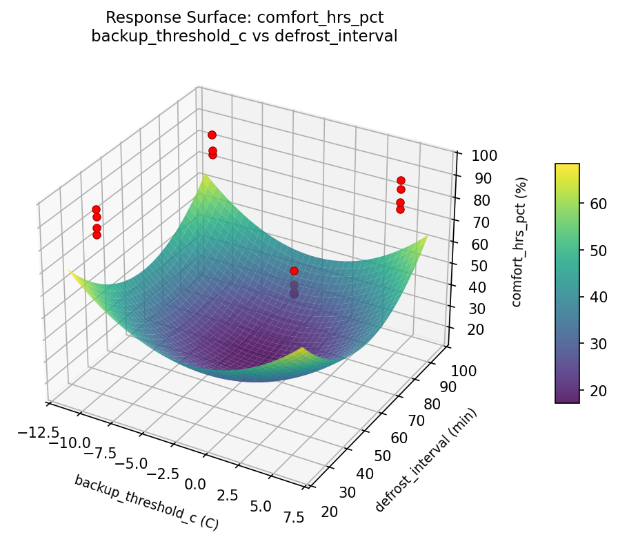
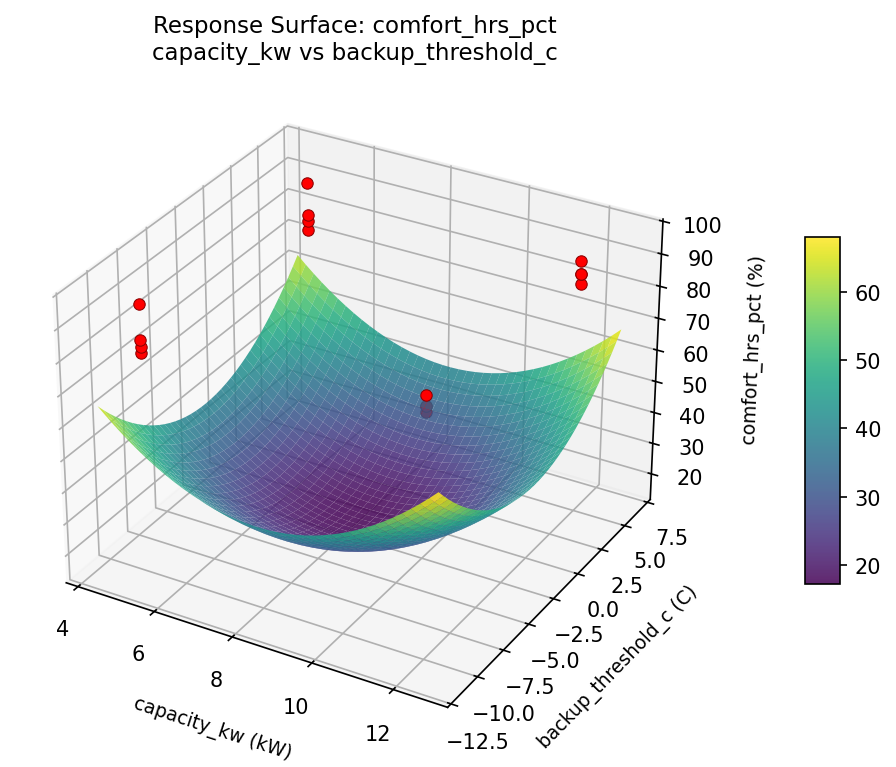
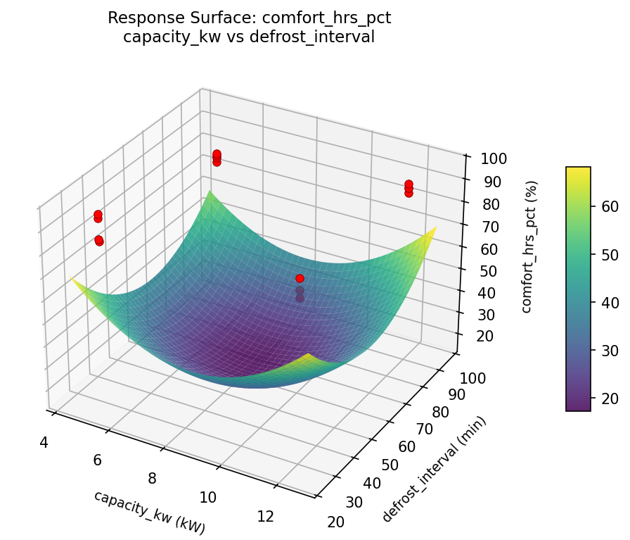

Summary
This experiment investigates heat pump sizing & settings. Full factorial of unit capacity, backup heat threshold, defrost interval, and fan speed to minimize annual energy cost and maximize comfort hours.
The design varies 4 factors: capacity kw (kW), ranging from 5 to 12, backup threshold c (C), ranging from -10 to 5, defrost interval (min), ranging from 30 to 90, and fan speed, ranging from low to high. The goal is to optimize 2 responses: annual cost (USD) (minimize) and comfort hrs pct (%) (maximize). Fixed conditions held constant across all runs include house sqft = 1800, climate zone = 5A.
A full factorial design was used to explore all 16 possible combinations of the 4 factors at two levels. This guarantees that every main effect and interaction can be estimated independently, at the cost of a larger experiment (16 runs).
Quadratic response surface models were fitted to capture potential curvature and factor interactions. The RSM contour plots below visualize how pairs of factors jointly affect each response.
Key Findings
For annual cost, the most influential factors were defrost interval (40.0%), fan speed (28.4%), capacity kw (21.5%). The best observed value was 748.0 (at capacity kw = 12, backup threshold c = 5, defrost interval = 90).
For comfort hrs pct, the most influential factors were capacity kw (39.5%), defrost interval (36.8%), backup threshold c (18.4%). The best observed value was 95.0 (at capacity kw = 5, backup threshold c = 5, defrost interval = 90).
Recommended Next Steps
- Consider whether any fixed factors should be varied in a future study.
Experimental Setup
Factors
| Factor | Low | High | Unit |
|---|
capacity_kw | 5 | 12 | kW |
backup_threshold_c | -10 | 5 | C |
defrost_interval | 30 | 90 | min |
fan_speed | low | high | |
Fixed: house_sqft = 1800, climate_zone = 5A
Responses
| Response | Direction | Unit |
|---|
annual_cost | ↓ minimize | USD |
comfort_hrs_pct | ↑ maximize | % |
Configuration
{
"metadata": {
"name": "Heat Pump Sizing & Settings",
"description": "Full factorial of unit capacity, backup heat threshold, defrost interval, and fan speed to minimize annual energy cost and maximize comfort hours"
},
"factors": [
{
"name": "capacity_kw",
"levels": [
"5",
"12"
],
"type": "continuous",
"unit": "kW"
},
{
"name": "backup_threshold_c",
"levels": [
"-10",
"5"
],
"type": "continuous",
"unit": "C"
},
{
"name": "defrost_interval",
"levels": [
"30",
"90"
],
"type": "continuous",
"unit": "min"
},
{
"name": "fan_speed",
"levels": [
"low",
"high"
],
"type": "categorical",
"unit": ""
}
],
"fixed_factors": {
"house_sqft": "1800",
"climate_zone": "5A"
},
"responses": [
{
"name": "annual_cost",
"optimize": "minimize",
"unit": "USD"
},
{
"name": "comfort_hrs_pct",
"optimize": "maximize",
"unit": "%"
}
],
"settings": {
"operation": "full_factorial",
"test_script": "use_cases/134_heat_pump_sizing/sim.sh"
}
}
Experimental Matrix
The Full Factorial Design produces 16 runs. Each row is one experiment with specific factor settings.
| Run | capacity_kw | backup_threshold_c | defrost_interval | fan_speed |
|---|
| 1 | 5 | 5 | 90 | high |
| 2 | 12 | -10 | 30 | high |
| 3 | 5 | 5 | 30 | high |
| 4 | 5 | 5 | 90 | low |
| 5 | 12 | 5 | 90 | low |
| 6 | 12 | -10 | 90 | low |
| 7 | 12 | 5 | 30 | low |
| 8 | 12 | -10 | 30 | low |
| 9 | 5 | -10 | 30 | high |
| 10 | 5 | -10 | 90 | low |
| 11 | 12 | 5 | 30 | high |
| 12 | 12 | 5 | 90 | high |
| 13 | 5 | 5 | 30 | low |
| 14 | 12 | -10 | 90 | high |
| 15 | 5 | -10 | 30 | low |
| 16 | 5 | -10 | 90 | high |
Step-by-Step Workflow
1
Preview the design
$ python doe.py info --config use_cases/134_heat_pump_sizing/config.json
2
Generate the runner script
$ python doe.py generate --config use_cases/134_heat_pump_sizing/config.json \
--output use_cases/134_heat_pump_sizing/results/run.sh --seed 42
3
Execute the experiments
$ bash use_cases/134_heat_pump_sizing/results/run.sh
4
Analyze results
$ python doe.py analyze --config use_cases/134_heat_pump_sizing/config.json
5
Get optimization recommendations
$ python doe.py optimize --config use_cases/134_heat_pump_sizing/config.json
6
Generate the HTML report
$ python doe.py report --config use_cases/134_heat_pump_sizing/config.json \
--output use_cases/134_heat_pump_sizing/results/report.html
Features Exercised
| Feature | Value |
|---|
| Design type | full_factorial |
| Factor types | continuous (3), categorical (1) |
| Arg style | double-dash |
| Responses | 2 (annual_cost ↓, comfort_hrs_pct ↑) |
| Total runs | 16 |
Analysis Results
Generated from actual experiment runs using the DOE Helper Tool.
Response: annual_cost
Top factors: defrost_interval (40.0%), fan_speed (28.4%), capacity_kw (21.5%).
Pareto Chart

Main Effects Plot

Response: comfort_hrs_pct
Top factors: capacity_kw (39.5%), defrost_interval (36.8%), backup_threshold_c (18.4%).
Pareto Chart

Main Effects Plot

Response Surface Plots
3D surfaces fitted with quadratic RSM. Red dots are observed data points.
annual cost backup threshold c vs defrost interval

annual cost capacity kw vs backup threshold c

annual cost capacity kw vs defrost interval

comfort hrs pct backup threshold c vs defrost interval

comfort hrs pct capacity kw vs backup threshold c

comfort hrs pct capacity kw vs defrost interval

Full Analysis Output
RSM surface: rsm_annual_cost_capacity_kw_vs_backup_threshold_c.png
RSM surface: rsm_annual_cost_capacity_kw_vs_defrost_interval.png
RSM surface: rsm_annual_cost_backup_threshold_c_vs_defrost_interval.png
RSM surface: rsm_comfort_hrs_pct_capacity_kw_vs_backup_threshold_c.png
RSM surface: rsm_comfort_hrs_pct_capacity_kw_vs_defrost_interval.png
RSM surface: rsm_comfort_hrs_pct_backup_threshold_c_vs_defrost_interval.png
=== Main Effects: annual_cost ===
Factor Effect Std Error % Contribution
--------------------------------------------------------------
defrost_interval 68.1250 20.5817 40.0%
fan_speed 48.3750 20.5817 28.4%
capacity_kw -36.6250 20.5817 21.5%
backup_threshold_c -17.1250 20.5817 10.1%
=== Interaction Effects: annual_cost ===
Factor A Factor B Interaction % Contribution
------------------------------------------------------------------------
backup_threshold_c fan_speed -45.8750 22.8%
capacity_kw backup_threshold_c 45.6250 22.7%
capacity_kw fan_speed -40.8750 20.3%
capacity_kw defrost_interval -38.1250 18.9%
backup_threshold_c defrost_interval 18.3750 9.1%
defrost_interval fan_speed 12.3750 6.1%
=== Summary Statistics: annual_cost ===
capacity_kw:
Level N Mean Std Min Max
------------------------------------------------------------
12 8 918.6250 87.6730 807.0000 1044.0000
5 8 882.0000 77.9139 748.0000 971.0000
backup_threshold_c:
Level N Mean Std Min Max
------------------------------------------------------------
-10 8 908.8750 87.8106 748.0000 1044.0000
5 8 891.7500 81.5191 796.0000 1021.0000
defrost_interval:
Level N Mean Std Min Max
------------------------------------------------------------
30 8 866.2500 87.3576 748.0000 971.0000
90 8 934.3750 65.1173 859.0000 1044.0000
fan_speed:
Level N Mean Std Min Max
------------------------------------------------------------
high 8 876.1250 69.8722 748.0000 971.0000
low 8 924.5000 91.1279 796.0000 1044.0000
=== Main Effects: comfort_hrs_pct ===
Factor Effect Std Error % Contribution
--------------------------------------------------------------
capacity_kw -3.7500 1.2379 39.5%
defrost_interval -3.5000 1.2379 36.8%
backup_threshold_c -1.7500 1.2379 18.4%
fan_speed 0.5000 1.2379 5.3%
=== Interaction Effects: comfort_hrs_pct ===
Factor A Factor B Interaction % Contribution
------------------------------------------------------------------------
capacity_kw defrost_interval -5.0000 66.7%
backup_threshold_c defrost_interval 1.0000 13.3%
defrost_interval fan_speed 0.7500 10.0%
backup_threshold_c fan_speed -0.5000 6.7%
capacity_kw backup_threshold_c 0.2500 3.3%
capacity_kw fan_speed 0.0000 0.0%
=== Summary Statistics: comfort_hrs_pct ===
capacity_kw:
Level N Mean Std Min Max
------------------------------------------------------------
12 8 88.2500 2.5495 84.0000 92.0000
5 8 84.5000 6.1644 78.0000 95.0000
backup_threshold_c:
Level N Mean Std Min Max
------------------------------------------------------------
-10 8 87.2500 5.0639 80.0000 95.0000
5 8 85.5000 5.0143 78.0000 93.0000
defrost_interval:
Level N Mean Std Min Max
------------------------------------------------------------
30 8 88.1250 4.6117 83.0000 95.0000
90 8 84.6250 4.9262 78.0000 91.0000
fan_speed:
Level N Mean Std Min Max
------------------------------------------------------------
high 8 86.1250 5.1113 78.0000 93.0000
low 8 86.6250 5.1252 80.0000 95.0000
Pareto chart (annual_cost): use_cases/134_heat_pump_sizing/results/analysis/pareto_annual_cost.png
Pareto chart (comfort_hrs_pct): use_cases/134_heat_pump_sizing/results/analysis/pareto_comfort_hrs_pct.png
Main effects (annual_cost): use_cases/134_heat_pump_sizing/results/analysis/main_effects_annual_cost.png
Main effects (comfort_hrs_pct): use_cases/134_heat_pump_sizing/results/analysis/main_effects_comfort_hrs_pct.png
Optimization Recommendations
=== Optimization: annual_cost ===
Direction: minimize
Best observed run: #13
capacity_kw = 12
backup_threshold_c = 5
defrost_interval = 90
fan_speed = high
Value: 748.0
RSM Model (linear, R² = 0.1031, Adj R² = -0.2230):
Coefficients:
intercept +900.3125
capacity_kw -6.0625
backup_threshold_c -8.3125
defrost_interval +23.4375
fan_speed +0.4375
RSM Model (quadratic, R² = 0.5367, Adj R² = -5.9489):
Coefficients:
intercept +180.0625
capacity_kw -6.0625
backup_threshold_c -8.3125
defrost_interval +23.4375
fan_speed +0.4375
capacity_kw*backup_threshold_c +3.8125
capacity_kw*defrost_interval -2.4375
capacity_kw*fan_speed +24.0625
backup_threshold_c*defrost_interval -24.1875
backup_threshold_c*fan_speed -6.6875
defrost_interval*fan_speed +39.0625
capacity_kw^2 +180.0625
backup_threshold_c^2 +180.0625
defrost_interval^2 +180.0625
fan_speed^2 +180.0625
Curvature analysis:
capacity_kw coef=+180.0625 convex (has a minimum)
backup_threshold_c coef=+180.0625 convex (has a minimum)
defrost_interval coef=+180.0625 convex (has a minimum)
fan_speed coef=+180.0625 convex (has a minimum)
Notable interactions:
defrost_interval*fan_speed coef=+39.0625 (synergistic)
backup_threshold_c*defrost_interval coef=-24.1875 (antagonistic)
capacity_kw*fan_speed coef=+24.0625 (synergistic)
backup_threshold_c*fan_speed coef=-6.6875 (antagonistic)
capacity_kw*backup_threshold_c coef=+3.8125 (synergistic)
capacity_kw*defrost_interval coef=-2.4375 (antagonistic)
Predicted optimum (from linear model):
capacity_kw = 5
backup_threshold_c = -10
defrost_interval = 90
fan_speed = low
Predicted value: 938.5625
Model quality: Weak fit — consider adding center points or using a different design.
Factor importance:
1. defrost_interval (effect: 46.9, contribution: 61.3%)
2. backup_threshold_c (effect: -16.6, contribution: 21.7%)
3. capacity_kw (effect: 12.1, contribution: 15.8%)
4. fan_speed (effect: 0.9, contribution: 1.1%)
=== Optimization: comfort_hrs_pct ===
Direction: maximize
Best observed run: #11
capacity_kw = 5
backup_threshold_c = 5
defrost_interval = 90
fan_speed = high
Value: 95.0
RSM Model (linear, R² = 0.1122, Adj R² = -0.2107):
Coefficients:
intercept +86.3750
capacity_kw +0.5000
backup_threshold_c +0.8750
defrost_interval +1.2500
fan_speed +0.0000
RSM Model (quadratic, R² = 0.6662, Adj R² = -4.0068):
Coefficients:
intercept +17.2750
capacity_kw +0.5000
backup_threshold_c +0.8750
defrost_interval +1.2500
fan_speed +0.0000
capacity_kw*backup_threshold_c -0.5000
capacity_kw*defrost_interval -1.3750
capacity_kw*fan_speed +0.8750
backup_threshold_c*defrost_interval +0.2500
backup_threshold_c*fan_speed -3.0000
defrost_interval*fan_speed +0.8750
capacity_kw^2 +17.2750
backup_threshold_c^2 +17.2750
defrost_interval^2 +17.2750
fan_speed^2 +17.2750
Curvature analysis:
capacity_kw coef=+17.2750 convex (has a minimum)
backup_threshold_c coef=+17.2750 convex (has a minimum)
defrost_interval coef=+17.2750 convex (has a minimum)
fan_speed coef=+17.2750 convex (has a minimum)
Notable interactions:
backup_threshold_c*fan_speed coef=-3.0000 (antagonistic)
capacity_kw*defrost_interval coef=-1.3750 (antagonistic)
defrost_interval*fan_speed coef=+0.8750 (synergistic)
capacity_kw*fan_speed coef=+0.8750 (synergistic)
capacity_kw*backup_threshold_c coef=-0.5000 (antagonistic)
Predicted optimum (from linear model):
capacity_kw = 12
backup_threshold_c = 5
defrost_interval = 90
fan_speed = high
Predicted value: 89.0000
Model quality: Weak fit — consider adding center points or using a different design.
Factor importance:
1. defrost_interval (effect: 2.5, contribution: 47.6%)
2. backup_threshold_c (effect: 1.8, contribution: 33.3%)
3. capacity_kw (effect: -1.0, contribution: 19.0%)
4. fan_speed (effect: 0.0, contribution: 0.0%)